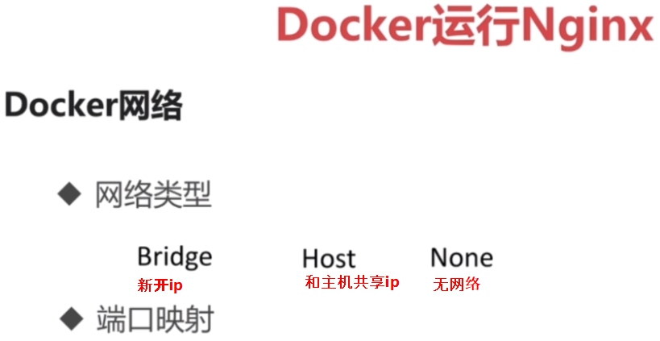
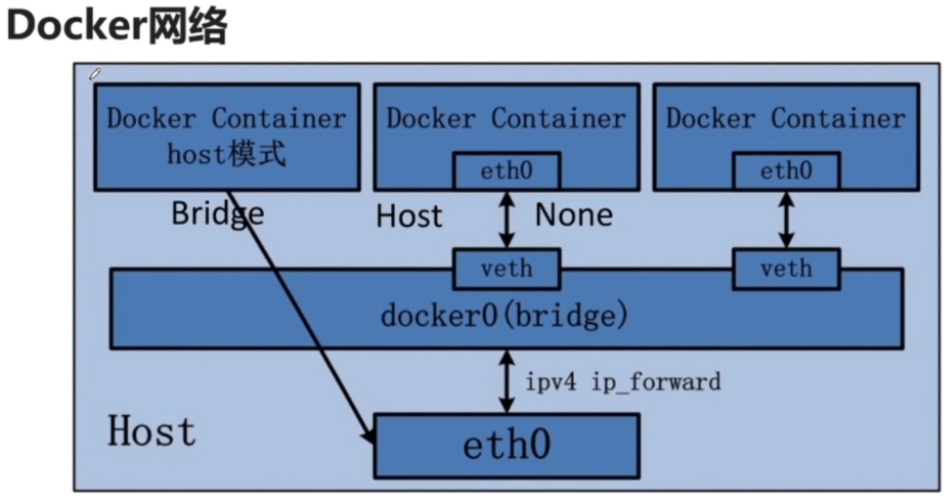
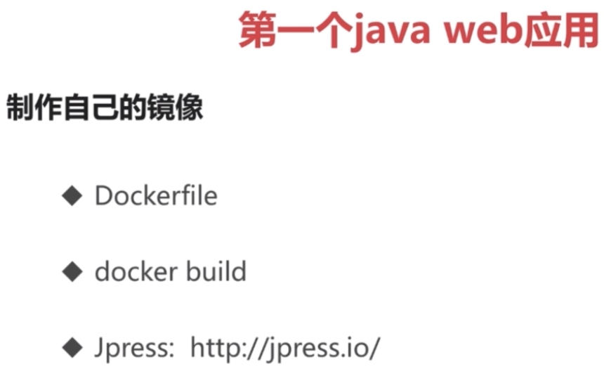

Docker
Page content
常用命令
docker pull nginx # 拉取镜像
docker run -d -p 8080:80 nginx # 运行容器, -d 后台运行, -p 主机端口 : 容器端口 做映射
docker run -d -P nginx # 运行容器, -d 后台运行, -P 容器的所有端口和主机随机的端口映射, docker ps 可以看到映射的情况
docker images # 查看现有镜像
docker ps # 查看正在运行的容器
docker run --help # 查看帮助
docker exec --help # 进入容器内部
docker exec -it 03 bash # 进入容器内部, 打开一个容器终端, 03是容器id的开头部分
exit # 退出容器终端
docker stop 1f #关闭容器
docker restart 1f #重启容器
which nginx # 查找nginx的安装位置
netstat -na|grep 8888 # 查找端口状态
uname -a # 查看系统版本
制作镜像
Dockerfile
from tomcat
MAINTIANER Yanjun aaa@qq.com
COPY jpress.war /usr/local/tomcat/webapps
运行命令
docker build -t jpress:latest ./Dockerfile # 制作镜像, -t 设置标签
参考资料


